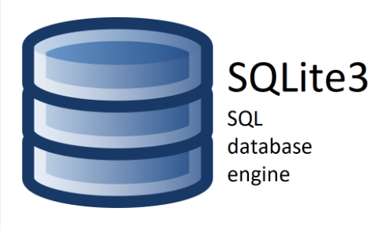

Base de données et modèles
Description de la structure de la base de données et des modèles de données.
Structure de la base de données 
Dans le cadre de ce projet Django, nous avons choisi d’utiliser SQLite3 comme base de données. Ce système de gestion de bases de données relationnelles est léger, performant et adapté aux applications web de petite ou moyenne envergure.
L’un des principaux atouts de SQLite3 est sa simplicité d’utilisation et sa portabilité. Du fait de son intégration à Django, il n’est pas nécessaire d’installer un système de gestion de base de données externe. Vous pouvez accéder à votre base de données SQLite3 de deux façons principales :
Via la ligne de commande SQLite3 CLI : Vous pouvez utiliser l’outil en ligne de commande SQLite3 CLI pour interagir avec la base de données, exécuter des requêtes SQL, et examiner les données. Pour utiliser cet outil, assurez-vous d’avoir SQLite3 installé sur votre système, puis exécutez la commande sqlite3 chemin_vers_la_base_de_données pour ouvrir la base de données.
Via l’interface d’administration de Django : Django fournit une interface d’administration conviviale qui permet de gérer facilement les données de l’application. Vous pouvez accéder à cette interface en démarrant le serveur de développement Django et en vous rendant sur la page d’administration dans votre navigateur web a l’adresse (http://127.0.0.1:8000/admin/). À partir de là, vous pouvez ajouter, modifier ou supprimer des données, et effectuer diverses opérations de gestion de la base de données.
Utilisation de SQLite3 
{kind=link}
Démarrer sqlite3 :
(venv) <repertoire_du_projet>\OC-P13\>sqlite3
SQLite version 3.37.2 2022-01-06 13:25:41
Enter ".help" for usage hints.
Pour ouvrir une base de données existante, utilisez la commande suivante :
.open oc-lettings-site.sqlite3
Pour afficher la liste des tables dans la base de données, utilisez la commande :
.tables
Pour afficher les informations sur les colonnes de la table « profiles_profile », utilisez la commande suivante :
pragma table_info(profiles_profile);
Pour effectuer une requête sur la table « profiles_profile » pour sélectionner les utilisateurs dont la ville favorite commence par « B », utilisez la commande suivante :
SELECT user_id, favorite_city FROM profiles_profile WHERE favorite_city LIKE 'B%';
Pour quitter SQLite3, utilisez la commande suivante :
.quit
Modèles de données 
Les modèles de données sont essentiels pour la définition de la structure de la base de données et la gestion des informations de l’application. Dans notre projet, nous utilisons le langage de programmation Python pour créer ces modèles.
Les modèles Django représentent les différentes entités et relations au sein de l’application. Chaque modèle est associé à une table de base de données, et les champs du modèle correspondent aux colonnes de la table. Ces modèles permettent de définir comment les données seront stockées et manipulées.
Par exemple, voici un modèle de classe de notre projet :
from django.db import models
class Letting(models.Model):
"""Represents a letting
Attributes:
title (str): letting name
address (obj): Address object
"""
title = models.CharField(max_length=256)
address = models.OneToOneField(Address, on_delete=models.CASCADE)
def __str__(self):
"Returns a string containing the title"
return self.title
Dans cet exemple, nous avons un modèle de données appelé Letting avec des champs tels que title et address.
Les relations entre les modèles, comme les clés primaires et étrangères, sont également établies directement dans les modèles Django, ce qui assure la cohérence et l’intégrité des données.
Le fait de définir les modèles en Python rend la création et la gestion de la base de données plus simple : il suffit d’utiliser des classes Python pour représenter les modèles, ce qui rend le code clair et facile à maintenir.
En résumé, l’association de SQLite3 et des modèles Django constitue le socle de données de l’application, permettant de stocker et d’accéder rapidement aux informations indispensables au bon fonctionnement du site web.